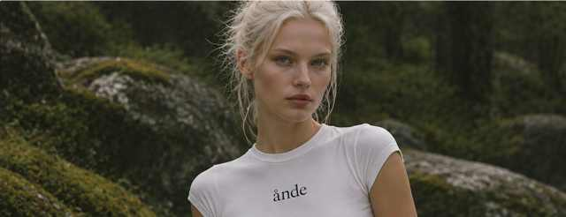

For slow mornings and open horizons.
A little yoga, a little sunshine, and nowhere you need to be.
Shop the tee
Postmodernist exploration
Reference: April Greiman, Pacific Wave (1987), Los Angeles County Museum of Art. Museum collection reference. The work uses collaged layers, halftone photography and expressive typography.
- Choice: Tilted editorial image disrupts the rigid rectangular grid.
- Choice: Overlapping text and orbital shapes suggest movement and visual fullness.
- Choice: Layered woodland greens evoke the outdoors without altering the product copy.
- Intended effect: Express ånde’s free-spirited Explorer personality and sense of adventure.
- Risk: Dense layers can distract from the shopping action or impair readability; the CTA stays distinct.